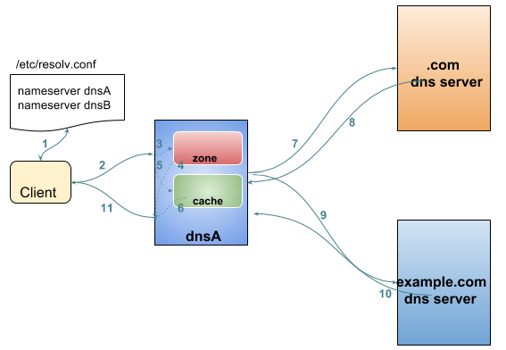

$ dig https://test.apps.example.com
; <<>> DiG 9.9.4-RedHat-9.9.4-51.el7_4.1 <<>> https://test.apps.example.com
;; global options: +cmd
;; Got answer:
;; ->>HEADER<<- opcode: QUERY, status: NOERROR, id: 44376
;; flags: qr aa rd ra; QUERY: 1, ANSWER: 1, AUTHORITY: 0, ADDITIONAL: 0
;; QUESTION SECTION:
;https://test.apps.example.com. IN A
;; ANSWER SECTION:
https://test.apps.example.com. 0 IN A 192.168.122.105
;; Query time: 1 msec
;; SERVER: 192.168.122.106#53(192.168.122.106)
;; WHEN: Sat Jan 06 17:43:43 CST 2018
;; MSG SIZE rcvd: 63DNS
基本概念
什么是 DNS
DNS 英文全称 Domain Name System，即域名系统。DNS 是一个分层的命名系统，充当着网络系统主机和资源的目录，目录中的信息是将网络名称映射到逻辑条目/资源记录数据。

上图为一 DNS 分层命名系统示例，DNS 层次结构是以根域名 . 开始的，从根域名开始向下会有多个分支及子域名。DNS 层次结构的每个层次都是由 . 来分开的。. 是最顶层的根域名，com，net 及 org 等域名占据了分层域名中的第二级；example.com，redhat.com 等占据了第三级；上图中 apps.example.com 则是四级。
为了更好的解释 DNS 分层结构，需要对下表中定义的三个名词有所了解:
| 名称 | 描述 |
|---|---|
域名(domain) |
一个域名是以公用名称结尾的一系列资源记录的集合，代表DNS 域名空间的整个子树，例如 TLD(top-level domain，顶级域名)是只有一个组件的域名；gTLDs(gTLDs，通用顶级域名)是最初根据行业分类设计，包括 |
子域名(subdomain) |
一个子域名同样是一个域名，它是另一个域名的子树。子域名通常是在讨论两个域名之间的关系时使用的术语。例如，apps.example.com 是域名 example.com 的一个子域名。 |
区(zone) |
一个区是特定名称服务器直接负责或认证的域名的一个部分。 这可能是一个完整的域名，也可能只是部分或全部域名的一部分子域名委托给其他域名服务器。 |
域名查询解析
当系统需要使用 DNS 服务器执行名称解析时，首先会按顺序向 /etc/resolv.conf 中列出的服务器发送查询，直到获得响应或所有列出的服务器耗尽。host 或 dig 命令可以用来手动查找 DNS 名称。
An example of dig

-
从
/etc/resolv.conf获取 DNS 服务器的地址 -
发送
https://example.com 的 IP 地址是多少请求到步骤1获取到的 DNS 服务器 -
查询
example.com是否在本地是有认证的 -
如果是直接返回对应的 IP 地址，跳过以后的步骤，直接将 IP 地址返回给 Client。在这种情况下，则返回会有一个 aa 的标记，即表示是本地 authoritative answer 的。
-
如果
example.com在本地没有认证，则查看example.com是否在缓存中有对应的记录 -
如果缓存块有对应的记录，则返回 IP 地址.跳过以后的步骤，直接将 IP 地址返回给 Client。在这种情况下，返回没有 aa 标记。
-
如果缓存中没有对应的记录，则一般发送类似
.com 的域名服务器是什么的请求到 TLD 域名服务器 -
TLD 域名服务器会返回类似
example.com 的域名服务器是 dns.example.com, IP 地址为 192.168.1.255信息 -
dnsA 域名服务器根据返回的地址信息，发送类似
example.com 的 IP 地址是多少的请求到 dns.example.com -
dns.example.com 服务iq会找到 example.com 对应的 IP 地址，例如 192.168.1.1，返回给 dnsA
-
dnsA 域名服务器将返回的信息在缓存中保存，并返回给Client
DNS RRs
DNS RRs(DNS resource records, DNS 资源记录) 是 DNS 区(zone) 中的记录，用来指定 DNS 区中特定名称或对象的详细属性，一条 DNS RRs 通常包括的属性有:
-
owner-name- 资源记录的名称 -
type- 资源记录的类型 -
TTL，- 资源记录在缓存中保存的时间 -
class- 该属性长见的值为IN，代表互联网 -
data- 数据属性，常见值 IPv4 地址， IPv6 地址
常见资源记录类型对应描述列表
| 类型 | 描述 |
|---|---|
A |
主机名和 IPv4 地址的映射 |
AAAA |
主机名和 IPv6 地址的映射 |
CNAME |
定义了一个别名指向另一个 A 或 AAAA 类型的资源记录 DNS 区中 CNAME 示例
注意事项:
|
PTR |
IPv4 地址/IPv6 地址和主机名的映射，用来 DNS 反转解析 PTR IPv4 将 IP 地址反转，以 in-addr.arpa 结束
PTR IPv6 反转且以十进制个位数字表示，以 ip6.arpa 结束
|
NS |
域名和在 DNS zone 中有授权的 DNS 名称服务器的映射 |
SOA |
提供了 DNS zone 工作原理等信息。任意一个 DNS zone 中都有一条 SOA 记录，提供的信息包括域名服务器的 Master 点，Salve 点，Slave 如何同步 Master 数据，及 DNS zone 的管理契约等。 |
MX |
域名和邮件交换服务器之间的映射 |
TXT |
名称和任意可读文本之间的映射，通常用于 Sender Policy Framework (SPF)，DomainKeys Identified Mail (DKIM)，Domain-based Message Authentication，Reporting and Conformance (DMARC) |
SRV |
用来定位在一个域中支持特定服务的主机。SRV 中提供了一系列提供特殊服务(例如 LDAP)的主机名，包括服务监听的端口号等。SRV 记录中包括 |
通常一个主机(不分客户端和服务器)会有如下记录:
-
一条或多条 A/AAAA 类型的记录映射主机名和它的 IP 地址
-
一条 PTR 记录将主机的每个 IP 地址反转映射为主机名
-
可选择，一条或多条 CNAME 记录进行别名设定及映射 A/AAAA 类型记录
除了如上记录，一个 DNS zone 会有更多如下记录:
-
一条 SOA 记录说明 zone 是如何工作的
-
一条 NS 记录指向授权的服务器
-
一条或多条 MX 记录进行域名和邮件交互服务之间的映射
-
可选择的，一条或多条 TXT 记录提供一些特殊服务，例如 SPF
-
可选择的，一条或多条 SRV 记录域中本地服务
相关 RFC 文档:
配置管理 unbound
安装启动 unbound
# yum install -y unbound
# systemctl enable unbound.service
# systemctl start unbound.service配置 unbound
# vim /etc/unbound/unbound.conf配置检测
# unbound-checkconf重起 unbound
# systemctl restart unbound.service配置防火墙
# firewall-cmd --permanent --add-service=dns
# firewall-cmd --reload查看 DNS 缓存
# unbound-control dump_cache
# unbound-control flush example.com
# unbound-control flushDNS 常见问题
DNS 常见问题分析
$ getent hosts example.com
$ grep ^hosts: /etc/nsswitch.conf
$ grep [[:space:]]example.com /etc/hosts
$ grep ^nameserver /etc/resolv.conf
nameserver 172.25.254.255
$ dig @172.25.254.255 A example.com
$ dig A example.com